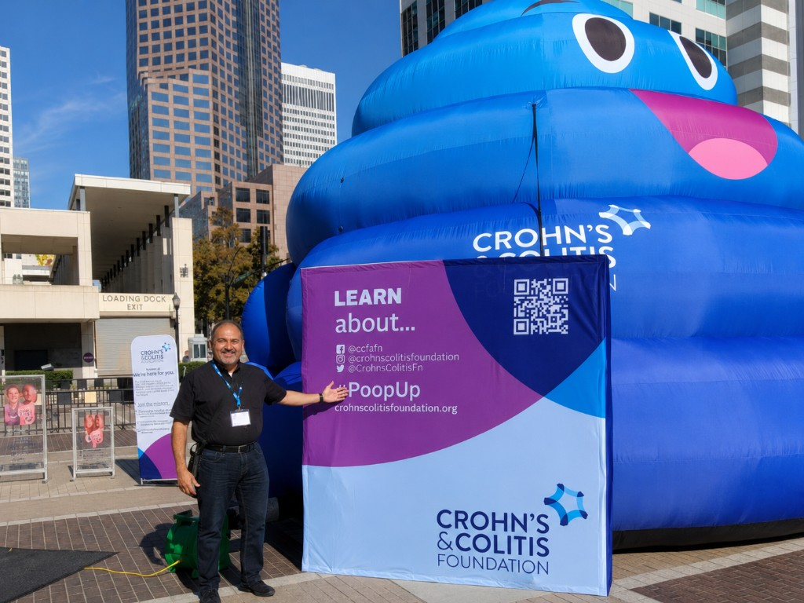
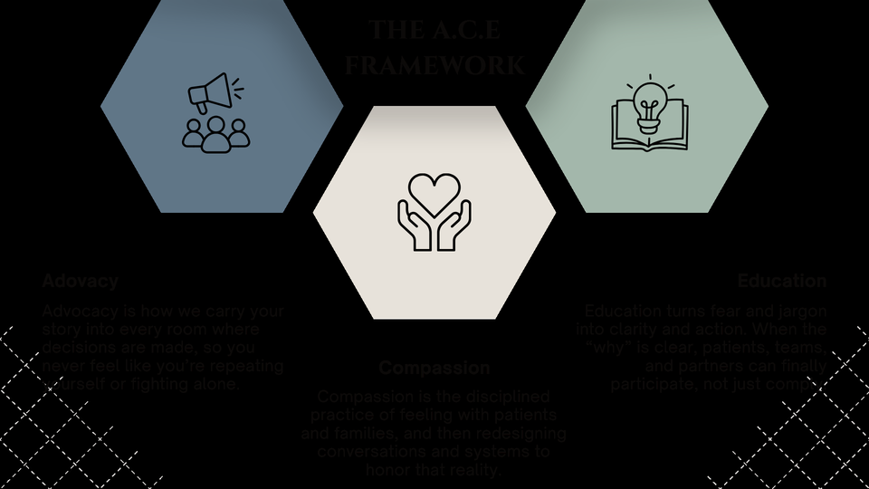
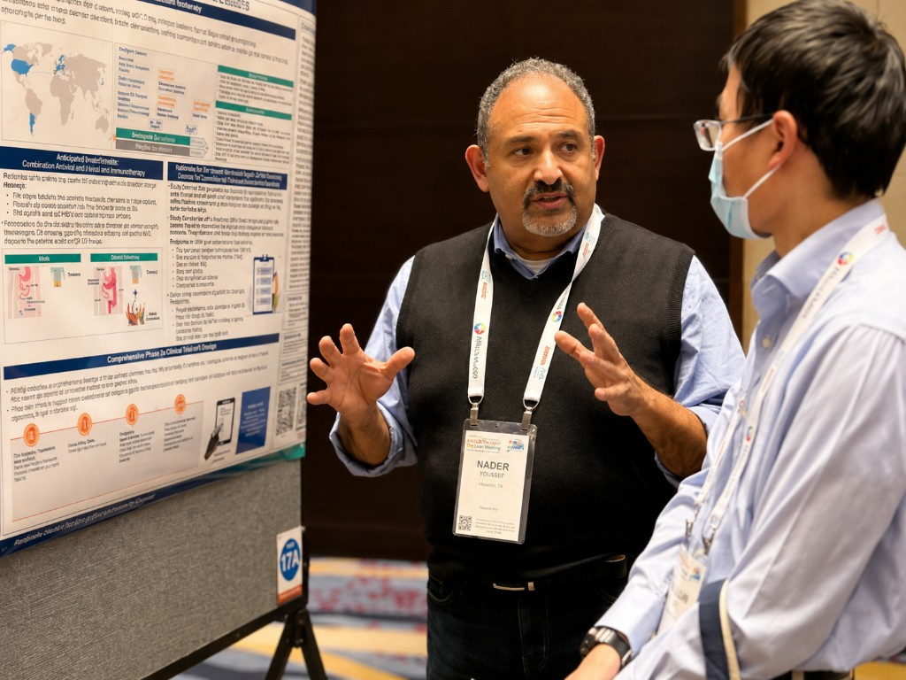
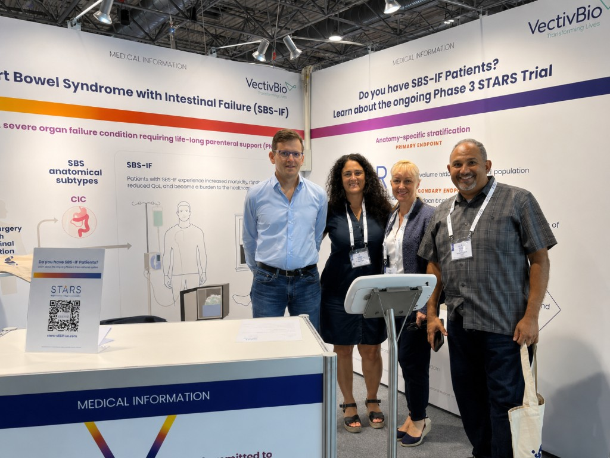
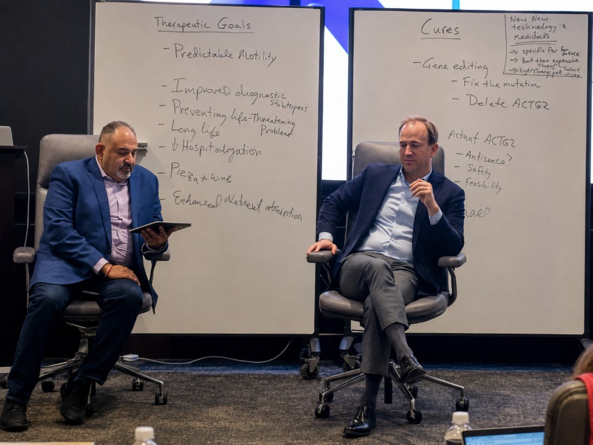

Patient Advocacy
Community Awareness
Engaging the public and patient communities around GI health education and access.
Dr. Nader N. Youssef, MD, MBA is a pharmaceutical development executive, board-certified physician, and patient advocate. Through advocacy, compassion & education (ACE), he helps patients, pharmaceutical teams, and healthcare professionals strengthen communication and engagement.
Triple E Concept
The same three pillars show up differently depending on whether you are a patient, a pharma partner, or a healthcare provider.
Patients
Pharma
Providers
If you've felt unheard, dismissed, or lost in the system—let's change that. Reclaim your voice in your healthcare journey.
If you're designing studies that need real patient insight—let's build research that resonates and recruits authentically.
If you want to strengthen patient communication and trust—let's rediscover the human connection in healthcare settings.
Start with two quick steps here—then continue your journey on the page that fits you best to narrow your focus and explore next actions.
Step 1 · Are you a...
Nice work—your primary goal is set.
Continue on the matching service page to narrow your focus and see suggested toolkits, or browse the page to learn more.
A structured approach grounded in evidence and refined through real-world engagement.

"When a doctor finally listens, everything changes. Not just your health, but your trust in the system itself."
— Patient, 2024 Focus Group
Whether you're a patient seeking to be heard, a partner building better research, or a provider strengthening human connection in care—Dr. Youssef is here to guide you through education and consulting.
Focus group sessions conducted across 18 months
Patient voices directly informing methodology
Years of clinical and consulting expertise
Photos from patient advocacy events, scientific congresses, and professional engagements.

Engaging the public and patient communities around GI health education and access.

Translating complex clinical science into clear, patient-centered dialogue at major meetings.

Connecting medical affairs, patient partnership, and field teams at global biopharma events.

Facilitating strategic conversations that align teams around therapeutic goals and patient impact.
Professional services only
Before continuing, please confirm you understand that Dr. Youssef provides non-clinical advocacy, education, communication support, and professional consulting—not medical diagnosis, treatment, or care as a treating physician. Full disclaimer